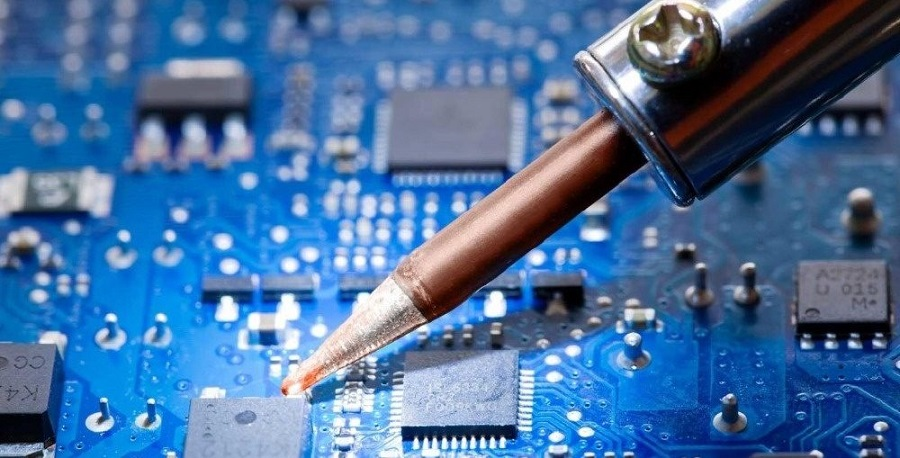

БЮДЖЕТНОЕ ОБУЧЕНИЕ
на базе 9 классов
Срок обучения 3 года 10 месяцев
Квалификация: Техник
Область профессиональной деятельности выпускников: организация и проведение работ по монтажу, регулировке, техническому обслуживанию и ремонту электронных приборов и устройств.
Объектами профессиональной деятельности выпускников являются:
узлы и функциональные блоки изделий электронных приборов и устройств;
электрорадиоматериалы и компоненты;
технологические процессы по монтажу, регулировке, ремонту электронных приборов и устройств;
контрольно-измерительная аппаратура;
технологическое оборудование для проведения сборочно-монтажных работ;
техническая документация;
первичные трудовые коллективы.
Техник готовится к следующим видам деятельности:
Выполнение сборки, монтажа и демонтажа электронных приборов и устройств.
Выполнение настройки, регулировки и проведение испытаний электронных приборов и устройств.
Проведение технического обслуживания и ремонта электронных приборов и устройств.
Выполнение работ по одной или нескольким профессиям рабочих.